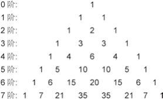
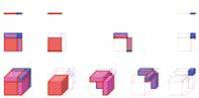

数海拾贝16
贾宪三角形是有记载的世界最早的高阶二项式（a+b）n展开后的系数的写法。注意它不是几何中的三角形，而是一个状似三角形的数表。南宋人杨辉（公元 1238—公元 1298）在《详解九章算法》里描述了这种数表，并明确指出，这种数表来自11世纪前半叶贾宪所著的《释锁算术》。14世纪初叶的元代数学家朱世杰在《四元玉鉴》里面明确画出七阶二项式展开的系数数表：

根据这个表格可以很方便地列出二项式的展开。比如，
（a+b）5=1a5+5a4b+10a3b2+10a2b3 +5ab4+1b5。
我们前边已经看到代数与几何的同源关系：1到3阶的二项式展开可以用下面的几何图形来表示。
